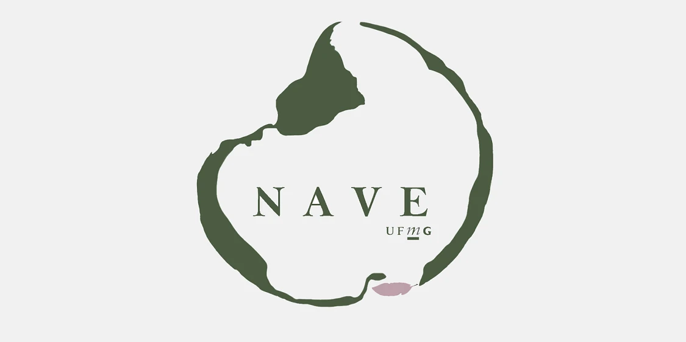

Grupo de Pesquisa NAVE (Natureza, Violência, Ecocrítica)
Formado em 2020 na Faculdade de Letras da UFMG, o NAVE reúne pós-graduandos, graduandos e docentes em torno de estudos ecocríticos com ênfase transdisciplinar.
O grupo realiza encontros quinzenais para debater textos literários, artísticos e teóricos voltados à representação da natureza, às questões ambientais e aos impactos da crise ecológica.